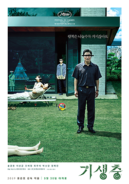

My name is Sierra and I am 25 years old.
I have a 3 year old, furry yorkie, and her name is
Lizzie.
Together we binge all of Netflix & Hulu.
See some movie recommendations below!
Steel Magnolias
Movie: Steel Magnolias
Annelle Dupuy, a shy, awkward beauty school graduate, moves to the northwestern Louisiana town of Chinquapin Parish, where Truvy Jones hires her to work in her home-based beauty salon.
Meanwhile, M'Lynn Eatenton and her daughter, Shelby, busily prepare for Shelby's wedding that is being held later that day. Along with Clairee Belcher—the former mayor's cheerful widow—they
arrive at Truvy's to have their hair done. While there, Shelby, who has type 1 diabetes, suffers a hypoglycemic attack, but recovers quickly with the women's help. M'Lynn reveals that due to
Shelby's medical condition, her doctor advises against her having children. Shelby considered ending her engagement to her fiancé, Jackson, so he would not be deprived of children.
Grouchy and sarcastic Louisa "Ouiser" Boudreaux arrives at the salon and immediately begins interrogating Annelle about her background. Annelle tearfully reveals that her no-good husband,
Bunkie, is evading the police and has taken all their money, her clothes and jewelry, and the car. Annelle further admits she is unsure her marriage is legal. Shelby, sympathetic, invites
Annelle to the wedding reception where she meets bartender Sammy DeSoto. Soon after, Annelle, following a short-lived wild streak, becomes deeply religious, annoying everyone, including Sammy.
During the Christmas holidays, Shelby announces she is pregnant. Everyone is thrilled except M'Lynn, knowing the risks. Truvy encourages M'Lynn to instead focus on the joy a new baby brings.
Watch the movie to see what happens next!
Before I Go To Sleep
Movie: Before I Go To Sleep
Christine Lucas wakes up next to a man she does not know. The man explains that he is her husband,
Ben, and that she suffered severe brain damage from a car accident ten years earlier, resulting
in her having no memory of her life from her early twenties onwards.
Christine receives treatment from Mike Nasch, a neuropsychologist, who gives her a camera to
record her thoughts and progress each day. He also calls her every morning to remind her to watch
the video in the camera, but instructs her to keep the camera hidden from Ben. Nasch reveals that
her memory loss occurred after she was attacked and left for dead near an airport hotel; they both
surmise that Ben tells Christine it was due to a car accident to avoid upsetting her.
Over the course of her treatment, Christine faintly remembers a red-haired woman named Claire. Ben
tells her that Claire was a friend who couldn't handle Christine's condition and ended contact
with her. Later, Christine recalls that she has a son, Adam. She angrily confronts Ben over hiding
their child, but he says Adam died of meningitis when he was eight. Christine also remembers the
name Mike and believes it may be the name of her attacker, which she tells Nasch during an
appointment. He hugs her to comfort her and almost kisses her, but she pulls back and then notices
on his name badge that his first name is Mike. Christine flees. Nasch later tells Christine he is
not able to treat her anymore because he has developed feelings for her.
Watch the movie to see what happens next!
Crazy, Stupid, Love
Movie: Crazy, Stupid, Love
Cal Weaver is a middle-aged man whose wife Emily asks for a divorce after she reveals an affair she had
with co-worker David Lindhagen. After moving into his own apartment, Cal begins frequenting an upscale bar,
talking loudly about his divorce, until he attracts the attention of a young man named Jacob Palmer. Jacob,
a womanizer who beds different women each night, was recently rejected by a woman named Hannah. Jacob takes
pity on Cal and offers to teach him how to pick up women. After a few awkward attempts to talk to women, Cal
seduces Kate at the bar. This experience gives Cal the confidence to approach other women, and Cal begins to
successfully emulate Jacob's example.
Eventually, Cal and Emily reunite at their 13-year-old son Robbie's parent-teacher conference, where Emily is
impressed by Cal's newfound confidence and fitted clothes. Their reunion goes well until Robbie's teacher is
revealed as Kate, who shares with Emily that she and Cal have had sex. Cal inadvertently confesses to having
sex with nine women since their separation and Emily leaves in disgust. Meanwhile, Hannah, a recent law school
graduate, is offended by her boyfriend as he offered her a position as a permanent lawyer instead of proposing
to her. She returns to the bar where she originally rejected Jacob's advances, finds him, and asks if he still
wants to take her home. Jacob takes her back to his luxurious home, but instead of becoming physically intimate,
they spend the night talking and laughing until they both fall asleep.
Watch the movie to see what happens next!
Parasite

Movie: Parasite
The Kim family—father Ki-taek, mother Chung-sook, daughter Ki-jung, and son Ki-woo—live in a
small semi-basement apartment (banjiha) in Seoul, have low-paying temporary jobs folding pizza
boxes, and struggle to make ends meet. University student Min-hyuk, a friend of Ki-woo's, gives
the family a scholar's rock meant to promise wealth. Leaving to study abroad and knowing his
friend needs the income, he suggests that Ki-woo pose as a university student to take over his
job as an English tutor for the daughter of the wealthy Park family, Da-hye. Ki-woo, pretending
to be a Yonsei University student, is subsequently hired by the Parks.